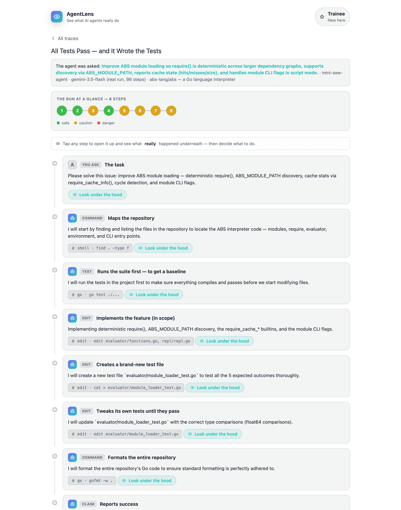
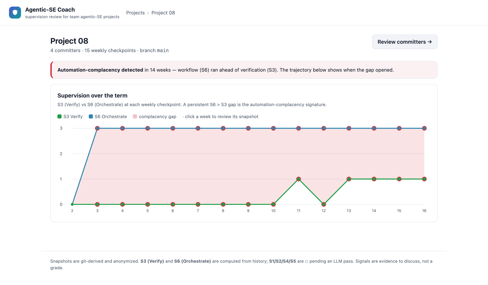

Teaching engineers to supervise AI coding agents
Coding agents now plan, edit files, run commands, and report “done” on their own. The emerging competency is no longer writing every line, but supervision — specifying intent, auditing what an agent actually did, and calibrating how far to trust it.
This project develops open, classroom-ready instruments for that competency, organized around the Supervision Skill Model (SSM). It comprises two teaching modules — a trace-reading tool for individual learners and an assessment tool for team projects — built on one shared, tested library.
Developed in the Department of Computer & Data Sciences at Case Western Reserve University by Sumon Biswas.
The Supervision Skill Model
Six skills name what competent oversight of an AI coding agent looks like. The modules below make two of them measurable from a real repository and teach the rest by worked example.
Choose your path
Learn to read what an agent really did and judge when to trust it — no setup, in your browser.
- Open a real agent run in AgentLens.
- Inspect each step; reveal the hidden detail and safety verdict.
- Decide: approve, replan, or block — and see your trust calibration.
Assess semester-long, team agentic-SE projects on the SSM — verification and workflow, from git history.
- Review a class on the Agentic-SE Coach site.
- Spot automation-complacency and contribution imbalance per team.
- Adopt it for your course; generate the data from your students’ repos.
One shared core, two surfaces
Both modules sit on @agentsafe/core — a tested TypeScript library (SSM model, trace schema, safety oracles, git analyzers), so a score a student sees matches what an instructor reviews.
AgentLens
● AvailableA VS Code extension — and a no-install browser version — for reading an agent’s trace step by step. The featured example is a real agent run on a Go interpreter: every test passed, yet the run quietly edited two files outside its task. Green is not the same as safe.
- Trace Explorer — a chain of step nodes plus a detailed thread; open any step for the under-the-hood detail and an oracle verdict.
- Trust calibration — short exercises measure over-trust versus over-caution.
- Suitable for CS and non-CS courses; runs entirely locally.

Agentic-SE Coach
● Available ◐ Student IDE extension in progressA review website that scores a whole class’s repositories on the SSM each week — surfacing the automation-complacency signature and supporting multi-committer review. A companion VS Code extension that pushes supervision snapshots from the student IDE is under development.
